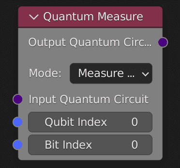

1 - Initialize a quantum circuit
In this menu you can see all options from Animation Nodes. In the bottom, there is a the Quantum Nodes menu.
Here, you can select all nodes from Quantum Nodes.
To create a new quantum circuit, we will create 2 registers: a quantum register and a classical register.

We now have 2 registers.
You can choose the number of qubits and bits you want to use.

Next, let's initiate our quantum circuit.
Select Init Quantum Circuit -> Init Quantum Circuit.
In this node you can select if you want to initialize your circuit by input number of qubits and bits, or use registers.
We are going to use our registers, select option “Quantum and Classical register”, and link registers to the node.
Our circuit is now initialized.
2 - Use quantum gates
All qubits and bits are initialized at 0. We want to change their value.
Let's modify qubits by using quantum gates.
Go to the menu Quantum Gates.
Here you have access to every quantum gate implemented in Quantum Nodes.
Note
If you want to learn more about each gate implemented in Quantum Nodes, you can read our documentation
here.
For now we are going to modify one qubit.
Select Quantum Gate X (the NOT gate) in the Single Qubit Gates menu.
To apply this gate in our circuit, you have to input the circuit in the gate and select the qubit you want to modify.
You can also add the same gate to another qubit.
In output we get back our circuit.
With a viewer node you can see the quantum circuit representation.
Here we can see the X gate applies to the qubit 0.
Now we are going to entangle two qubits by using a CX gate (Controlled NOT).
Select Quantum Gate CX in the C Gates menu and input the circuit in it.
This gate entangles two qubits.
You have to choose which qubit will control and which qubit will be the target.

Now we have a circuit with multiple gates to manipulate qubits, we must be able to get results by sending them to a simulator.
3 - Get results from our quantum circuit
To get results from our quantum circuit, we can first measure qubits.
In our circuit, we created a classical register to store the qubits values.
We have 2 bits in our classical register, so we only can store the value from 2 qubits (you can change the number of qubits and bits in your registers at any moment).
To store qubit values in bits we are going to use the node Quantum Output -> Quantum Output -> Quantum Measure
With this node you can choose which qubit value will be stored in which bit.
There is also an option to directly measure all qubits and automatically store them in a bit.

Here we choose to only measure the qubit 0 and 1 and store them in the bits 0 and 1.
To do that use two Quantum measure nodes.
Now that we have measured some qubits from our circuit, we are going to extract some results.
Counts
First, we can get the probabilities of qubits state with the node Quantum Circuit Get Counts in Quantum Output menu.
Important
A measure node is needed for this node to work. Add one between your circuit and the Get count node or else it won't work.
This node simulates many times the circuit and returns how many times it gives the same result.
Note
In this example, we try 1024 times the circuit and get 1024 times the result “11”, which means that there is 100% chance of getting “11” as the result of this circuit.
State vector
In the result of a quantum circuit, you have also a state-vector that contains probabilities from qubits.
These probabilities are complex numbers, so we choose with Quantum Nodes to return a complex numbers list.
To use it select Quantum Output State.
Here we have a list of 8 complex numbers related to the number of possibilities (2^3 sequences).
Note
In our example, we saw that there is a 100% chance to have “11” in the result. This means in the binary number that there is 100% to have 3 (11 in base 2 = 3 in base 10).
Important
Note here that we placed the Quantum Output State after measures, it means that if you want to get the probabilities you will not be able to get them, because measures “freeze” qubits in a state.
In other words, it will return that you have 100% to get one random result and not probabilities of multiple results.
If you want probabilities you have to use Quantum Output State without measures (other example in annex)
Other quantum circuits:
1 Qubit, Hadamard Gate
2 Qubits, Hadamard Gate (q0), Rotation X Gate (5°)(q1)
“Bell state”: 2 Qubits, Hadamard Gate (q0), CX Gate (q0 -> q1)
“Bell state” with measures
{kind=link}
{kind=link}
{kind=link}
{kind=link}
{kind=link}
{kind=link}
{kind=link}
{kind=link}
{kind=link}
{kind=link}
{kind=link}
{kind=link}
{kind=link}
{kind=link}
{kind=link}
{kind=link}
{kind=link}
{kind=link}
{kind=link}
{kind=link}
{kind=link}
{kind=link}
{kind=link}
{kind=link}
{kind=link}